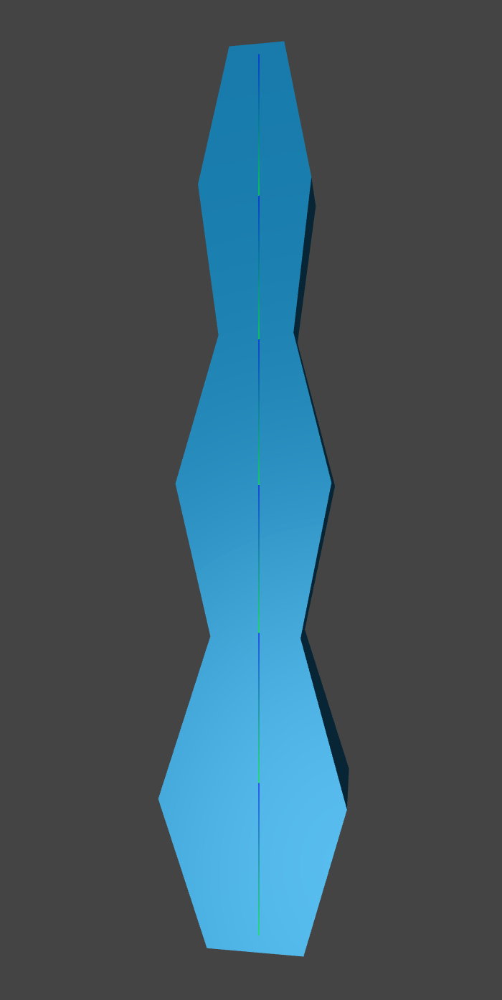

|

The simple arm model I would be manipulating.
Initially I modeled and rigged in Blender, but it was very difficult figuring out how to get the object loaded and rigged properly. I ended up making it in the script instead of uploading an object.
|
h
|